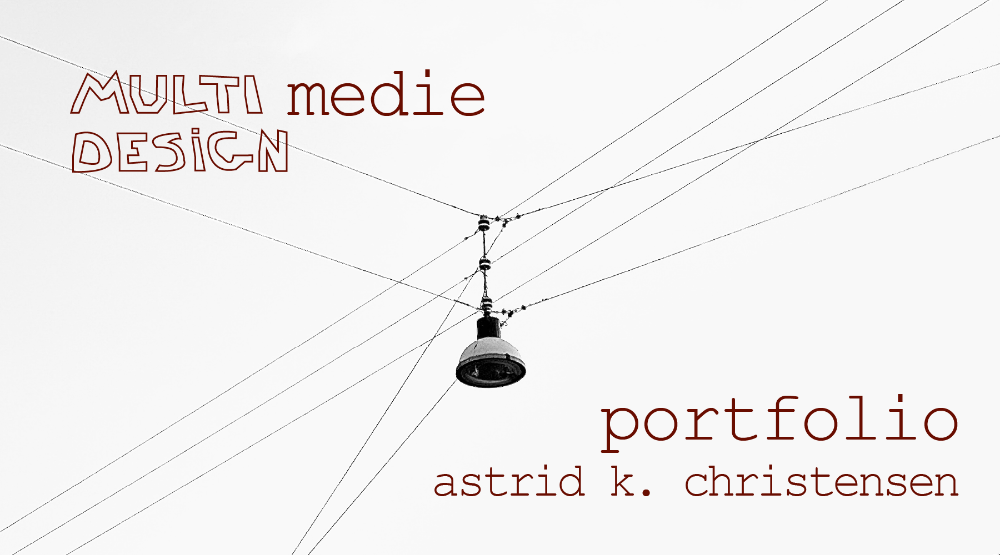
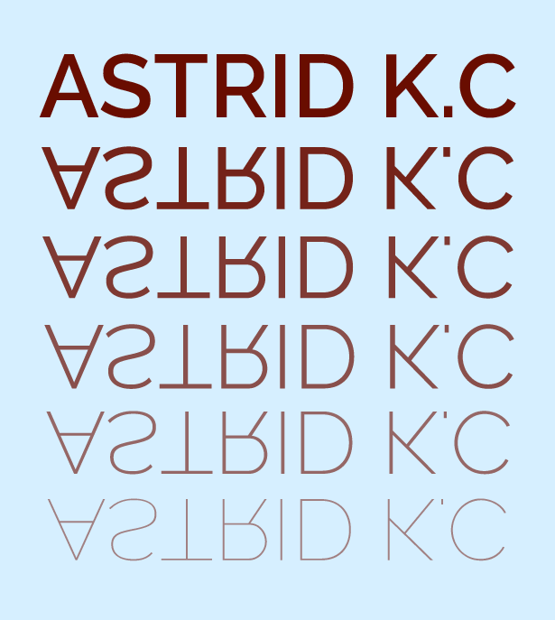

Design, idéer og digitale løsninger
Velkommen til mit portfolio.
Dette portfolio samler de vigtigste projekter, jeg har arbejdet på
som en
del af første
semester på KEA, Multimediedesign. Her finder du kreative løsninger, visuelle designs og tekniske
opgaver, der
demonstrerer mine færdigheder inden for digitalt design, udvikling og kodning.
Mit mål er at
skabe
brugervenlige og
visuelt appellerende løsninger, der kombinerer funktionalitet og æstetik. Gå på opdagelse i mine
projekter, og få et
indblik i, hvordan jeg arbejder med idéudvikling og designprocesser.
